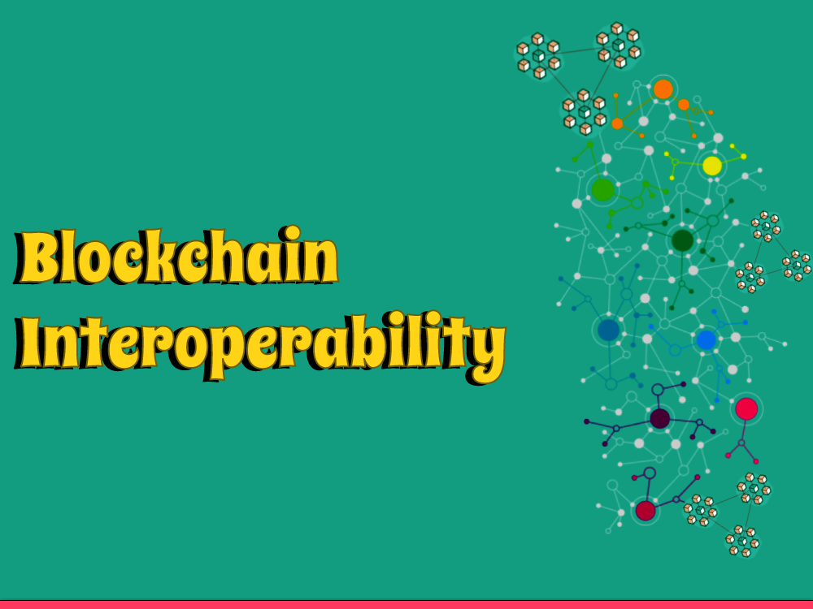

Welcome to the astonishing domain of blockchain interoperability, where the walls between divergent blockchain networks are being destroyed. In this article, we'll investigate the idea of blockchain interoperability and its significant effect on the universe of decentralized innovation. Go along with us as we disentangle the difficulties, headways, and capability of interoperable blockchain arrangements.
Section 1: Grasping Blockchain Interoperability
1.1 The Requirement for Interoperability
As blockchain innovation advances, a rising number of autonomous blockchain networks arise. Nonetheless, this discontinuity makes a test: How could these organizations convey and team up consistently? This is where blockchain interoperability becomes possibly the most important factor.
1.2 Characterizing Blockchain Interoperability
Blockchain interoperability alludes to the capacity of various blockchain organizations to trade data and work together really. It empowers the exchange of resources, information, and savvy contracts across different blockchains, separating storehouses and encouraging a more associated biological system.
SSection 2: Difficulties and Arrangements in Interoperability
2.1 Specialized Hurdles
Accomplishing blockchain interoperability requires tending to specialized difficulties like agreement instruments, programming dialects, and information designs. Projects are investigating different methodologies, including sidechains, cross-chain extensions, and interoperability conventions, to defeat these obstacles.
2.2 Guidelines and Collaborations
The improvement of interoperability guidelines and industry joint efforts assumes an essential part in advancing similarity between various blockchain networks. Associations like the InterWork Collusion, Venture Ethereum Coalition, and Universe Organization are pursuing laying out normal systems for consistent interoperability.
2.3 Altcoins and Tokens
Past Bitcoin, a large number of elective cryptographic forms of money, known as altcoins, have arisen. Each altcoin offers extraordinary highlights, like upgraded protection, quicker exchanges, or concentrated applications. Moreover, tokens are computerized resources based on existing blockchain stages, addressing responsibility for explicit resource or utility inside an undertaking's biological system.
Section 3: Progressions in Interoperable Solutions
3.1 Cross-Chain Communication
Cross-chain correspondence conventions work with the safe exchange of resources and information between various blockchains. These conventions empower interoperability by laying out trustless extensions and guaranteeing the trustworthiness and similarity of exchanges across networks.
3.2 Nuclear Swaps
Nuclear trades permit the immediate trade of digital currencies between various blockchains without the requirement for go-betweens. This innovation guarantees trust and dispenses with counterparty risk, empowering consistent shared exchanges across blockchain biological systems.
3.3 Interoperability Platforms
A few undertakings are committed to building interoperability stages that act as a center point for interfacing numerous blockchains. These stages influence normalized conventions and give designers the devices and framework to empower interoperability, upgrading the general effectiveness and convenience of blockchain networks.
Section 4: True Applications and Benefits
4.1 Decentralized Money (DeFi)
Blockchain interoperability is altering the DeFi space by empowering the consistent exchange of resources across numerous stages. Clients can get to a more extensive scope of monetary administrations and influence the best elements of different decentralized applications, all while keeping up with command over their resources.
4.2 Inventory network Management
Interoperability considers straightforward and recognizable stockpile chains by coordinating various blockchains engaged with the inventory network process. This encourages further developed provenance, validation, and effectiveness all through the production network, improving trust and lessening extortion.
4.3 Cross-Industry Collaboration
Blockchain interoperability opens entryways for cross-industry cooperation and advancement. Areas like medical care, energy, and administration can use interoperable blockchains to smooth out tasks, improve information sharing, and drive significant headways in their separate fields.
Conclusion
Blockchain interoperability addresses a crucial achievement in the development of blockchain innovation. By laying out consistent associations between unique organizations, it opens a universe of conceivable outcomes, coordinated effort, and development. As interoperability keeps on propelling, we can anticipate extraordinary changes across businesses, at last molding an additional interconnected and decentralized future.